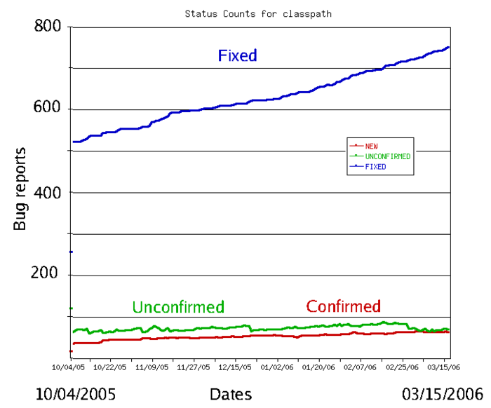

Software Testing
Software testing is an investigation conducted to provide stakeholders with information about the quality of the software product or service
under test. Software testing can also provide an objective, independent view of the software to allow the business to appreciate and understand the risks of software
implementation. Test techniques include the process of executing a program or application with the intent of finding software bugs (errors or other defects),
and verifying that the software product is fit for use.
Software testing involves the execution of a software component or system component to evaluate one or more properties of interest.
In general, these properties indicate the extent to which the component or system under test:
*meets the requirements that guided its design and development,
*responds correctly to all kinds of inputs,
*performs its functions within an acceptable time,it is sufficiently usable,can be installed and run in its intended environments, andachieves the general result its
stakeholders desire.
As the number of possible tests for even simple software components is practically infinite, all software testing uses some strategy to select tests that are feasible
for the available time and resources. As a result, software testing typically (but not exclusively) attempts to execute a program or application with the intent
of finding software bugs (errors or other defects). The job of testing is an iterative process as when one bug is fixed, it can illuminate other, deeper bugs, or can
even create new ones.Software testing can provide objective, independent information about the quality of software and risk of its failure to users or sponsors.
Software testing can be conducted as soon as executable software (even if partially complete) exists. The overall approach to software development often determines when and
how testing is conducted. For example, in a phased process, most testing occurs after system requirements have been defined and then implemented in testable programs.
In contrast, under an agile approach, requirements, programming, and testing are often done concurrently.
Software Bug
A software bug is an error, flaw or fault in a computer program or system that causes it to produce an incorrect or unexpected result, or to
behave in unintended ways. The process of finding and fixing bugs is termed "debugging" and often uses formal techniques or tools to pinpoint bugs, and since the 1950s,
some computer systems have been designed to also deter, detect or auto-correct various computer bugs during operations.
Most bugs arise from mistakes and errors made in either a program's source code or its design, or in components and operating systems used by such programs.
A few are caused by compilers producing incorrect code. A program that contains many bugs, and/or bugs that seriously interfere with its functionality,
is said to be buggy (defective). Bugs can trigger errors that may have ripple effects. Bugs may have subtle effects or cause the program to crash or freeze the computer.
Other bugs qualify as security bugs and might, for example, enable a malicious user to bypass access controls in order to obtain unauthorized privileges.
Some software bugs have been linked to disasters. Bugs in code that controlled the Therac-25 radiation therapy machine were directly responsible for patient deaths in the 1980s.
In 1996, the European Space Agency's US$1 billion prototype Ariane 5 rocket had to be destroyed less than a minute after launch due to a bug in the on-board guidance
computer program. In June 1994, a Royal Air Force Chinook helicopter crashed into the Mull of Kintyre, killing 29. This was initially dismissed as pilot error,
but an investigation by Computer Weekly convinced a House of Lords inquiry that it may have been caused by a software bug in the aircraft's engine-control computer error.
In 2002, a study commissioned by the US Department of Commerce's National Institute of Standards and Technology concluded that "software bugs, or errors, are prevalent
and so detrimental that they cost the US economy an estimated $59 billion annually, or about 0.6 percent of the gross domestic product".
